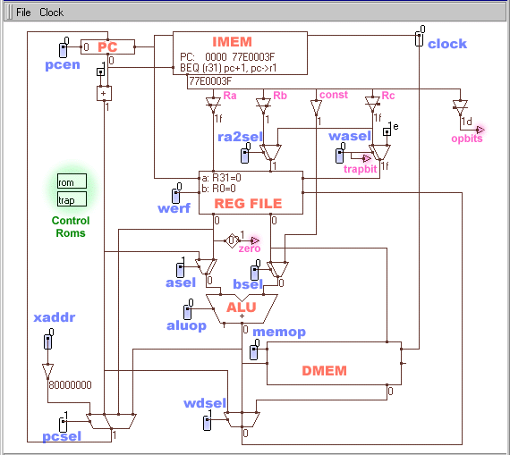
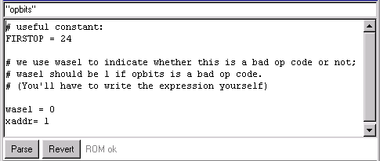
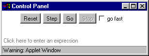
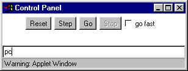
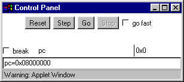
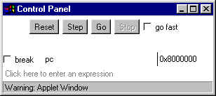

How Computers Work
Problem Set 2
Issued: December 7, 2000
Problem 1: Warm up Exercises – to be done without collaboration.
| PCSEL | RA2Sel | ASel | BSel | ALUFN | WDSel | WR | WERF | WASel | |
| MULC(R9,5,R11) | |||||||||
| DIV(R2,R3,R4) | |||||||||
| LD(BP,-3,R1) | |||||||||
| BRNZ(R1,QUIT,R31) | |||||||||
| ST(R2,0x2222R3) |
ST(R1, +2, BP)
Problem 2: May be done collaboratively.
| PCSEL | RA2Sel | ASel | BSel | ALUFN | WDSel | WR | WERF | WASel | |
| PUSH(R10) |
| PCSEL | RA2Sel | ASel | BSel | ALUFN | WDSel | WR | WERF | WASel | |
| POP(R10) |
Problem 3: To be done without collaboration.
Ben Bitdiddle has been given the assignment of implementing the ALU for a new micro processor called the eta. He has just finished implementing addition, and now he is work on subtraction. One common approach for implementing subtraction is to reuse hardware for addition of signed "2s complement" numbers in combination with negation -- 5 - 3 is implemented as 5+(-3). Late one night after eating too many Doritos and drinking too many Cokes, Ben Bitdiddle convinces himself that it would be interesting if he directly implemented subtraction in the ALU.
Problem 4: Lab Assignment 2 - Programming the Control ROM
In this part, you'll be given a working schematic of the Beta datapath. Your job is to program the Control ROM so that all the mux and enable switches get set properly.
When you start Betasim, you'll see a single schematic window instead of all of the little windows you got before. Load the file L2beta.path into this window. This schematic is live, in the sense that you can change the values of the switches,
DON'T PANIC! The picture below is a lot less confusing than it seems at first. Ignore the fancy colors for now, and just find the boxes marked PC, IMEM, REG FILE, ALU, and DMEM. These should give you a good starting reference to understand the datapath. For example, follow the line coming out of the bottom of the PC to the + box, then through a mux, back to the PC. That's the +1 loop for the PC. You should also be able to trace a path from the bottom of the PC, through the IMEM, then through the REG FILE, a few muxes, the ALU, the write data selection mux, and back into the REG FILE. That's the 2-register ALU path.

Each of the blue rounded rectangles is a switch. You can left-click on a switch to change its value. Most of the switches are connected to muxes. By changing the value of the switch, you can watch the mux change its input connection.
If you're playing with Betasim while you're reading this, you'll notice that almost the entire drawing is very light gray. Betasim draws things in light gray if they aren't in use. It uses dark red for the wires when data is travelling along them, and draws elements in black if they're supplying data. You can see this by clicking the pcen switch in the top left corner. This enables the PC register, and should highlight all the wires and elements that supply data to the PC register. Go ahead! Try it!
Any time you want, you can hold down the "CTRL" key and roll the mouse over an element or an element's wire port to see what it's called. Try this for the PC register. You'll notice that the ports are "pc.en" (enable), "pc.clk" (clock), "pc.D" (data input), and "pc.Q" (output). This should help you to figure out how everything is connected.
The two boxes glowing in green in the picture above are the control ROMs. (They don't glow green in the real Betasim.) These are the elements you'll need to program for this part of the lab. To edit an element, double-click it. Do this now for the trap control ROM. You'll get a window like this:

The first line of the ROM edit window lists the inputs to the control ROM. In this case, the only input is opbits, which is the little mauve triangle labeled opbits in the upper right corner of the schematic window. The value of opbits is the six bits of the opcode. Based on the value of opbits, you should be able to set the wasel switch. Look on the schematic to find the wasel switch. You'll notice that it feeds the mux that determines whether to write to register Rc, or to the XP, register 30. (30 is 1e in hexadecimal.) Remember the reason we need to write to the XP? If there is a bad opcode, the Beta jumps to instruction number 1 and writes the value of pc+1 into XP. This ROM handles that case. You need to write an expression for wasel that evaluates to 1 (true) if opbits represents a bad opcode, and to 0 (false) otherwise. Here's an example to get you started:
wasel = opbits < FIRSTOP
You should use C-style expressions. You could have said:
wasel = opbits==1 || opbits==2 || opbits==3 || opbits==4 || ...
... but that would have been really messy. See the useful operators section for a list of the operators you can use, and the handy opcode chart to help you find the bad opcodes.
Once you're satisfied with the expression you've entered, hit the "Parse" button at the bottom left of the window. If you have any parse errors, the error message will appear in red, and the cursor will move to the location of the error. If you want to revert the ROM back to the state before you made all your changes, hit the "Revert" button. In both cases, the ROM edit window will go away. Double-click the ROM schematic to open the window again.
Double-click the other control ROM, labeld "rom". This ROM takes inputs from opbits, zero, and trapbit. The zero bit is high when Ra is zero, and low when it isn't. The trapbit bit comes directly from the wasel switch that we set using the trap ROM. This bit is high if the Beta is attempting to trap.
Why do we use two ROMs? You'd think that we could set the wasel switch just like all the other switches in a single rom. The reason is that this schematic is missing a few parts: there is no way to cause an interrupt or a fault in this drawing. If we did have fault and interrupt bits, they would feed into the trap ROM. Currently, the trap ROM has 6 input bits (opbits), and the rom ROM has 8 (opbits, zero, and trapbit). This gives us a total of 28+26= 320 rom lines. If we include the fault and interrupt bits in the trap ROM, the trap ROM would have 8 input bits for a total of 512 rom lines. If instead we did everything in a single ROM, that ROM would have 10 input bits (opbits, zero, fault, interrupt), or 1024 lines. By using two ROMs, we use half the space of having a single ROM! TANSTAAFL (There Ain't No Such Thing As A Free Lunch): what do we lose by using two ROMs with half the space?
In this ROM, you'll use opbits, zero, and trapbit to define all the other switches in the schematic. In order to do this, you'll need to think sideways. Ordinarily, you'd think, "Okay, what switches need to be set for the LD instruction?". You'd imagine a large table with a list of the opcodes down the side, and the names of the switches along the top. Unfortunately, the information for the control ROM is entered the other way around. The correct question to ask is: "Okay, for which opcodes does pcen need to be true?". The answer is, "pcen should be true for all opcodes except for HALT (opcode 0)". This kind of reasoning allows you to type "pcen= opbits!=HALT" in the rom ROM.
If you'd like a place to write stuff down, we've built a handy ROM table for you to use.
Hint #1: you'll really need to feel comfortable with what each of the switches does, so it's probably a good idea to "play ROM" yourself and set the switches for a few instructions before tackling the ROM writing.
Hint #2: Although you don't have interrupts in this particular schematic, you should definitely think about how interrupts affect various instructions. Remember, interrupts act just like traps, but they can happen at any time, not just when there's a bad opcode. Make sure that the switch settings for a particular instruction don't prevent the interrupt from happening properly: pc<-xaddr, XP<-pc+1.
If you are happy with the ROM you have created, you need to go to the Save or Save As command in the File menu on the schematic window. The ROM is saved along with the schematic. This is unlike the Instruction Memory. The Instruction memory has its own Save command that saves only the Instruction memory.
We will soon have some more programs you can load into instruction memory to test your ROM. A staff member will ask you to load one or more of these. For now, here are some programs with known behaviors... load them with File->Open in the code window:
| Operation | Example |
| Addition, subtraction, multiplication, division | a+b, a-b, a*b, a/b |
| Modulo (remainder when divided by) | a%16 |
| Logical And, Logical Or | a&&b, a||b |
| Bitwise And, Bitwise Or | a&b, a|b |
| Equal to, not equal to | a==0, a!=0 |
| Greater than, less than, greater or equal, less or equal | a>b, a<b, a>=b, a<=b |
| If-then-else (the ? : operator from C) | opbits<24 ? 0 : 1 |
Use parentheses to override the normal order of operations, for example, (2+3)*4 is 20, while 2+3*4 is 14.
| hi bits/lo bits | 000 (0) | 001 (1) | 010 (2) | 011 (3) | 100 (4) | 101 (5) | 110 (6) | 111 (7) |
| 000 (0) | ||||||||
| 001 (8) | ||||||||
| 010 (16) | ||||||||
| 011 (24) | LD | ST | JMP | BRZ | BRNZ | LDR | ||
| 100 (32) | ADD | SUB | MUL | DIV | CMPEQ | CMPLT | CMPLE | |
| 101 (40) | AND | OR | XOR | SHL | SHR | SRA | ||
| 110 (48) | ADDC | SUBC | MULC | DIVC | CMPEQC | CMPLTC | CMPLEC | |
| 111 (56) | ANDC | ORC | XORC | SHLC | SHRC | SRAC |
In this part, you'll take your working Beta schematic and write code for it. In particular, we're going to exercise the trap mechanism (that being one of the more interesting parts of the Beta).
The instruction we'll add is SUP. This instruction puts a 1 (true) into the destination register if the supervisor bit of the PC is true, and it puts a 0 (false) into the destination register if the supervisor bit is not true. The supervisor bit is the high bit of the PC. In a real operating system, the supervisor bit is used to enforce security. Certain parts of memory, the disk, and the input/output ports of a computer can't be read or written to unles the supervisor bit is set, and the only way to set the supervisor bit is to take a trap or interrupt. The trap address, of course, is secure operating system code, not user or application code. Once the operating system handles the trap, it makes sure to clear the supervisor bit before going back to user or application code.
In your schematic, there are some vital gates missing that allow a malicious programmer to set the supervisor bit. For your own amusement: See if you can figure out how you might set it. The Beta simulation from part 1 includes the necessary hardware to prevent supervisor bit hacking, so your stunt won't work.
Also note that the IMEM totally ignores the supervisor bit. 0x8000001A is the same address as 0x1A as far as the IMEM is concerned.
Where were we? Oh, right. The new SUP instruction:
|
|
To include the SUP instruction in your code, you have to make a macro for it:
.macro SUP(rc) betaopc(0b011010, 31, 0, rc)
You must use this macro definition. You're not allowed to substitute anything else for Ra or the constant.
When the beta hits this instruction (and if you've correctly implemented your trap mechanism), the old PC+1 will get written into R30 (XP), and the PC will be set to 0x80000001 (note that the supervisor bit has been set!). Your supervisor code should load the bad instruction, check the opcode, and branch to a SUP handler, where the real work gets done.
Double-click the IMEM to open the code window. You can use the File>Open menu item from the code window to open traptest.uasm. This code demonstrates the software multiplication we talked about in lecture and recitation. Step through it slowly until you understand what's going on here. Even better, sit with somebody in the lab and discuss and explain it to each other until you both understand. We'll be using the same mechanism to implement the SUP instruction. The only tricky part of the actual function body is getting access to the PC. We won't tell you how to do this. You figure it out.
You can leave the multiply functions in the code and just add your SUP handler. (Isn't the trap mechanism cool?) You'll also want to replace the MyMUL and MyMULC calls with a call to your SUP instruction.
Now that you think you have a SUP instruction in your code, how do you test it? If you call the SUP function from your main code, you'd expect the answer to be zero. The supervisor bit is not normally set when your code is called. You have to somehow force the supervisor bit to be on when you call your SUP instruction. Since Betasim is a simulator, we can hack it and poke a supervisor bit into the pc manually. Here's how:
|  | Select the Control Panel; click Stop and Reset if necessary. |
|  | Click the line that says "Click
here to enter an expression". This
opens a text entry box. Type "pc" (without the quotes)
and hit return to find out the value of the pc.
Note that the pc is 0. (The supervisor bit isn't set.) If you run the code, your SUP instruction should return 0. |
|  | Hit the reset button again to reset your Beta.
Click the "Click here to enter an expression" line again and enter the expression "pc=0x80000000". When you hit return, this sets the pc to location 0x80000000. |
|  | Location 0x80000000 is really location 0x0, the start of the code,
but with the supervisor bit set.
Hit the go button (don't hit reset first!) to exectue your code with the supervisor bit set. Your SUP instruction should now return 1. |
If the SUP instruction returns 1 when the supervisor bit is set, then go fetch a friendly lab assistant and get checked off.
In this part, you'll change the control ROMs to implement the SUP instruction in hardware. We think you're at the point now where you can handle this all by yourself, so we won't give you any help in the instructions.
Okay, just one hint. You already have all the hardware you need in the schematic -- you just need to find the correct settings for the switches.
Good luck!
Use the same procedure as Part 2 to test your hardware-based SUP instruction.
{kind=link}